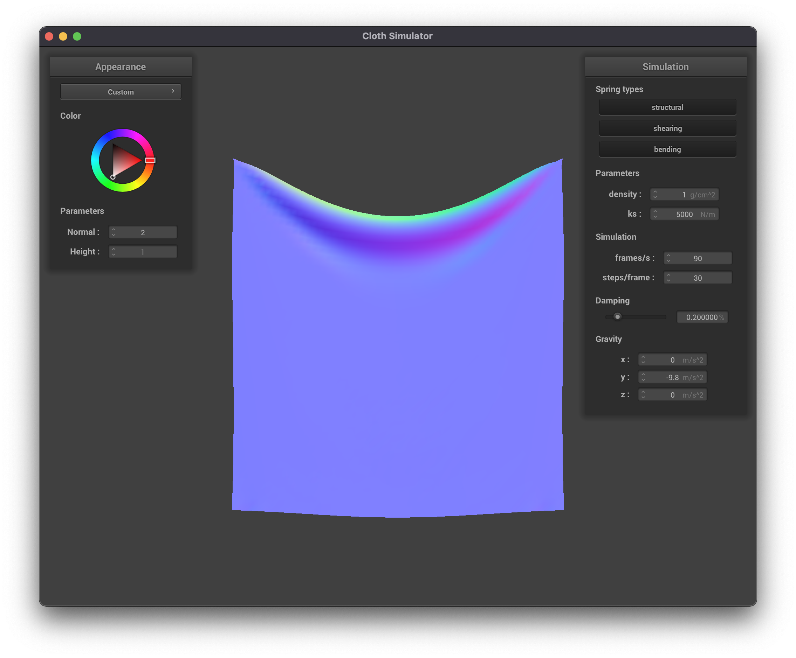
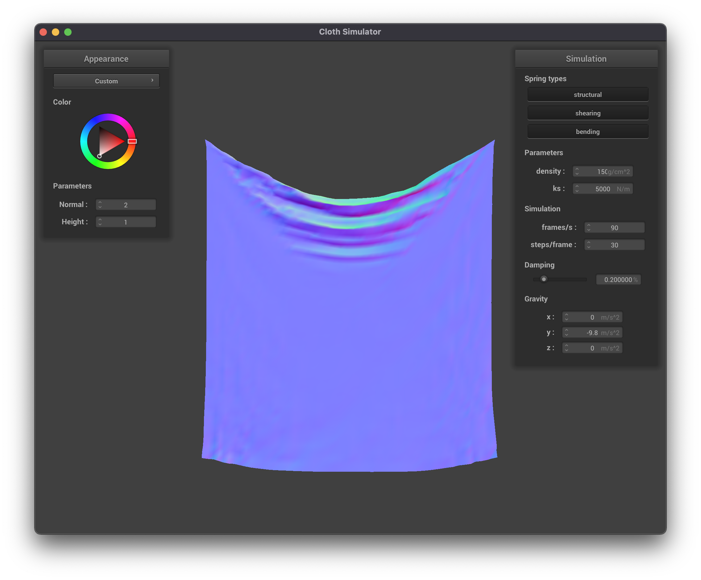
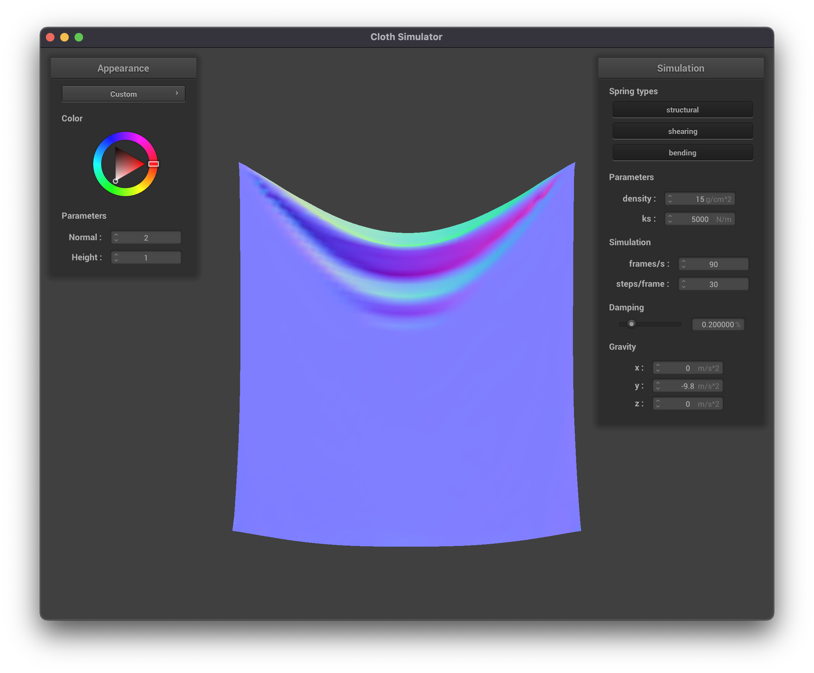
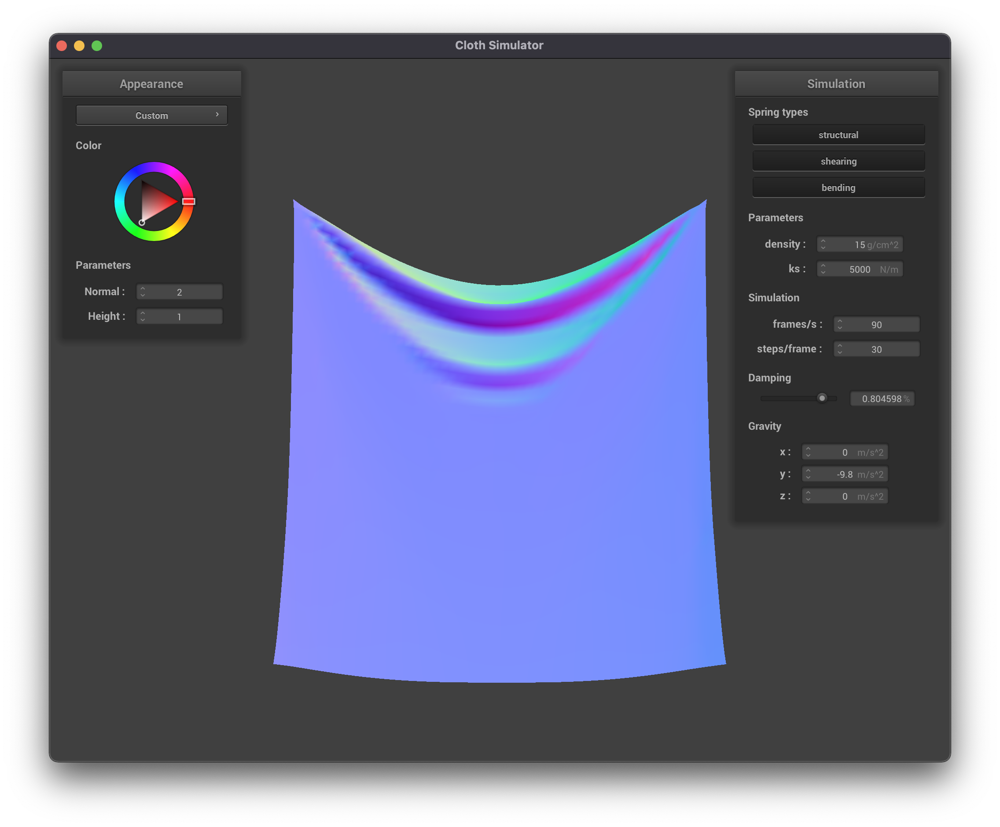
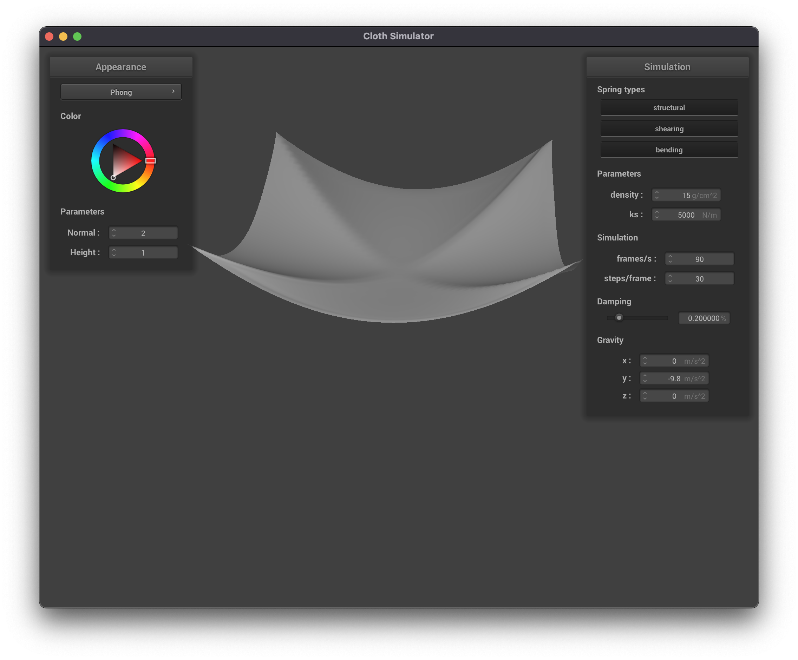

We coded a cloth simulation for this project, using physical concepts like masses and springs to model the cloth. Cloth sims are used for creating clothes and fabrics in animation, which is important for creating realistic motion and saving animators time. To implement our cloth simulation we coded the physics equations for our grid of points and handled cloth collisions with spheres, planes, and the cloth itself. For the final part of the project, we created shaders to shade the cloth with diffuse and Blinn-Phong shading as well as textures, bump maps, displacement maps, and environment-mapped reflections.
The parameter ks controls the stiffness of the cloth. The cloth is most stiff (does not sag and looks like a solid plane rotating about the two pinned points) at high values of ks.
The parameter density controls how much the cloth will fold on itself. With a low density, the cloth is very smooth. And has few ripples in its final position. With high density, the cloth folds onto itself more, creating smaller and more frequent ripples.
|

|

|
Increasing damping slows down the simulation and the apparent speed of the cloth but produces visually similar results by the end of the simulation. With the 4-pinned-corner cloth, damping changes the number of ripples in the cloth after it fully stretches itself: a higher damping value produces fewer ripples.
|

|

|
|  |
For this assignment, Natalie completed parts 1 and 3 while Ryan completed parts 2 and 4. We both worked on part 5. We were able to work well together, and were able to work on parts that were interesting to both of us, while still collaborating on the project together.